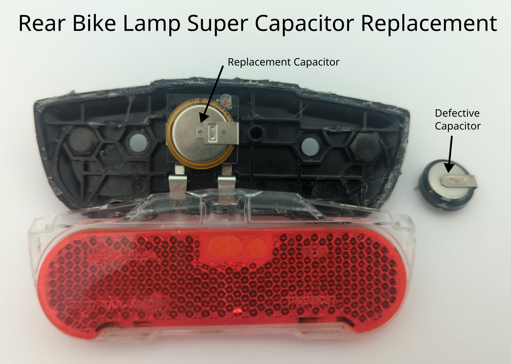

Garage door remote control

Description of failure
The garage door can only be opened after repeated pressing of the transmitter. Additionally, the range of the signal is very short.
Failure investigation
First, the voltage supply should be checked and ensured.
For this purpose, the battery is tested and optionally replaced.
The spring contact points shown in the image are already somewhat corroded in the present case and are replaced by a battery clip.
Since the success rate to open the garage door is dependent on the key pressure, the push button should first be checked.
A closer look at the layout shows that the entire circuit is supplied via the push button.
The resistance of the push button is tested. This should be in the milli ohm range (multimeter measurement should show < 1 ohm).
In this case, the resistance in pressed state is several Ohms and changes from time to time, so the button is defective.
The push button is replaced, and the garage door opens well via the remote control.
Push button Mouser order number: 653-B3SL-1005P